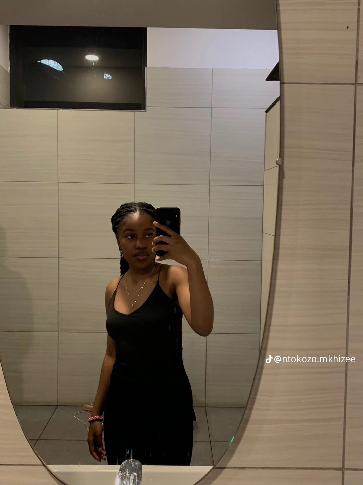

Yeah nah, God snapped with this one
Okay so where do i start. First impressions? Well, i looked at you and liked what i saw, then i messaged you and somehow you responded, thinking back i probably said the most cringe thing as the first text but still somehow yoou responded
so what did i think of you? Well, again you are pretty and i enjoyed talking to you, i like your feminicity? (Is that a word? angazi). I even remember when we started talking you'd send me bible verses and devotionals every day and icl that was a new thing for me,
this really showed me where you stand in your faith and seeing that side of you made me like you more, it challenged me to be better, better to deserve you...

Home Affairs Tommorrow?
Hi Bongii!
💬
Next →
Next →
(Philippians 1:3)
What if i just Love bombed you RN on the 2nd page